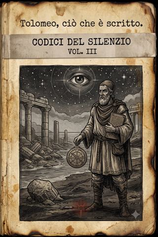

Terre Desolate · codice III
Ciò che è scritto
Il codice di Claudio Tolomeo, l'astronomo risorto: un fatalista che ha letto la fine nelle stelle, custodisce visioni che non rivela a nessuno, e ogni giorno spreca un incantesimo per schernire Morte — l'unica cosa che gli paia una scelta sua.
- ≈ 31 min di lettura
- a cura dell'Archivista
- dalle partite a Apocalisse
- anche in EPUB, 2,4 MB
Nota del Curatore
Codici del Silenzio — il terzo manoscritto
Questo codice l’ho ritrovato lontano dagli altri due, e in condizioni migliori: la mano che l’ha vergato conosceva la carta, la piegava con cura, la nascondeva con metodo. Non stupisce. Chi scrive qui è, fra tutte le voci di questa collana, l’unico che scriveva già per mestiere, duemila anni prima delle trombe: si firma Claudio Tolomeo, e sostiene — con una serietà che ho scelto di non contraddire — di essere l’astronomo alessandrino di quel nome, risorto dopo due millenni di nulla.
È il codice più difficile che io abbia curato, perché il suo autore mente e dice il vero nello stesso respiro, e lo fa apposta. Sostiene che tutto è già scritto e che nulla si può cambiare; eppure scrive, il che è già una contraddizione, ché nessuno prende la penna per raccontare ciò che crede immutabile. Confessa visioni che giura di aver taciuto a tutti — e forse le confessa solo perché è certo che le leggeremo troppo tardi. E in mezzo a tanta cupa certezza, tiene aperta una sola, ostinata, comica ferita: una faida privata con Morte, che schernisce ogni giorno con un incantesimo, per il gusto — dice — di fare una cosa, almeno una, che non sia già stata decisa per lui.
Ho lasciato i suoi Messaggi a Morte dove li aveva messi, in corsivo staccato dal resto: sono, credo, il cuore vero di questo codice, più delle sue profezie. Perché un uomo si misura non da ciò in cui crede, ma da ciò contro cui si ostina; e Tolomeo, che crede nell’inevitabile, si ostina contro di esso ogni singolo giorno, con la sola arma dell’insolenza. Non so se sia saggezza o follia. So che, di tutti i codici, è quello che mi ha fatto sorridere più spesso, e sempre un attimo prima di raggelarmi.
Come per gli altri, non ho corretto nulla. Dove profetizza, l’ho lasciato profetizzare; dove sfotte, ridere; dove tace — perché tace molto, anche con noi — ho rispettato il suo silenzio.
Indice
Un solo codice, di una sola voce che ha già letto la fine.
- Ciò che è scritto (dopo il silenzio — da Roma alla bocca dell’inferno) — La cerca della chiave vista dall’astronomo che ne conosce già l’esito: la spada che sceglie il fatalista e non il credente, la via segreta per l’Eden, il negoziato con la Stella del Mattino, e una guerra intera gridata sotto il suo nome. Il tutto punteggiato dagli sberleffi quotidiani che manda a Morte, l’unico nemico che non lo può prendere — e la sola cosa, dice lui, che gli somigli a una scelta.
Linea temporale
Gli anni si contano «dopo il silenzio» (d.s.). Il codice di Tolomeo copre lo stesso arco dei log a-973/974/975, riletto dal suo punto di vista fino alla sua diserzione. Le date esatte non gli interessano: per lui è tutto già accaduto.
- II sec. d.C. — Claudio Tolomeo misura il cielo ad Alessandria; muore (168 d.C.).
- ~2000 anni dopo, ~20 d.s. — risorto, scopre la divinità che decide il destino → il suo fatalismo; a Montecavo lo tengono per «veggente minore».
- ~20 d.s. — La cerca (a-973) — Roma, San Pietro: la spada lo sceglie, non Beomondo; la visione sanguinante della lama dall’elsa impossibile.
- ~20 d.s. — La fuga (a-974) — il regno del gelo di Morte (nasce la faida e il primo Messaggio); il pomo del serpente e la via per l’Eden; il negoziato con Lucifero a Mont Saint-Michel.
- ~20 d.s. — Verso la bocca dell’inferno (a-975) — araldo di Carlo Martello, poi diserzione alla vigilia della battaglia. Qui il codice si chiude, con l’ultima lettura delle stelle.
Il suo cammino si separa da quello del gruppo con la diserzione: non incontra mai il barbaro Ronan, che si aggiunge dopo.
Ciò che è scritto
Tutto ciò che leggerai è già accaduto. Non lo dico per figura, come farebbe un poeta: lo dico come lo direbbe un astronomo, con la freddezza di chi ha misurato le orbite e sa che una stella non sceglie dove sorgere. Io sono Claudio Tolomeo, che ad Alessandria chiamavano il matematico, e che questi ultimi uomini chiamano il menagramo — e hanno più ragione loro, ché di buono non annuncio mai nulla, non per malanimo, ma perché di buono, ormai, non ne resta scritto.
Misurai il cielo quando Roma era giovane e si credeva eterna. Poi morii, come muoiono tutti, e per quasi duemila anni non fui nulla — e il nulla, ve l’assicuro, non è terribile: è soltanto esatto. Poi tornai, in questo mondo dopo le trombe, e tornando feci la scoperta che ha spento in me ogni fretta: che oltre le sfere siede davvero una divinità, e che essa decide il destino degli uomini. Capite cosa significa, per chi ha speso la prima vita a cercare le leggi del cielo? Significa che le leggi ci sono, che il moto è fissato, che ogni cosa — la caduta di un impero e la caduta di una foglia — è già vergata in una tavola che non possiamo leggere per intero, ma che è scritta. Da allora non credo più in niente, se non nell’inevitabile. È l’unica fede che non delude mai.1
Scrivo questo codice non per mutare ciò che verrà: nulla muta ciò che verrà, e chi vi dice il contrario o mente o non ha letto abbastanza. Lo scrivo per confessare. A Montecavo mi tenevano per veggente da poco, buono a prevedere la pioggia e le carestie vicine, perché non ho mai rivelato ciò che vedo davvero. Le visioni grandi le ho sempre taciute — dirle non serve, e il silenzio è l’ultimo potere di chi non ne ha altri. Ma a te, sconosciuto che leggerai a cose compiute, dico la verità intera. Tanto sarà già accaduta.
Una cosa sola faccio, ogni giorno, contro ciò che è scritto. Una vanità da vecchio. Ma di quella dirò a suo tempo, ché riguarda Morte, e con Morte ho un conto che saldo riga per riga.
Il redivivo
Mi risvegliai in un mondo che avevo già visto finire, e non ne fui sorpreso, perché lo avevo previsto — non io, si capisce, ma le tavole; io avevo solo fatto i conti.
Chi torna dopo duemila anni si aspetta di trovare il futuro, e trova invece una rovina che somiglia al passato più remoto: uomini stretti nelle caverne, che si contendono l’acqua e temono il buio, come prima che qualcuno insegnasse loro a misurare l’ombra di un bastone a mezzogiorno. È la beffa più grande della storia, e io ho il privilegio amaro di essere l’unico ad averla vista da entrambe le estremità: partii da un’umanità che credeva di salire, e sono tornato a una che è ricaduta esattamente nel punto da cui era partita, come un grave lasciato andare a mezz’aria. In mezzo, duemila anni di cattedrali e di calcoli, di imperi e di poemi, e tutto per tornare al fango e alla paura del lupo. Se qualcuno avesse voluto dimostrarmi che il moto degli uomini è circolare e non ascendente, non avrebbe potuto scegliere prova più elegante.
Il sapere che avevo raccolto — le orbite, gli epicicli, la mappa delle stelle fisse ed erranti — non serviva più a nessuno. Poterlo condividere solo con altri risorti della mia epoca o più antichi, che ripetevano i miei stessi errori con la mia stessa convinzione, fu la prima delle mie pene, e non la maggiore. La maggiore, prima ancora del cielo, fu la solitudine di chi ricorda il vero: perché io ho conosciuto un cielo con un sole, e queste creature no, e quando dico loro «sole» mi guardano come si guarda un vecchio che parla di un dio dell’infanzia. Sono, fra loro, doppiamente straniero: nel tempo e nel sapere. E un uomo doppiamente straniero impara presto a tacere, o a mentire, che è una forma di silenzio più educata.
La maggiore venne quando alzai di nuovo gli occhi al cielo, per abitudine, come si tocca una vecchia cicatrice, e vidi che il cielo era cambiato. Non le stelle — quelle, per fortuna, seguono ancora le loro leggi — ma ciò che sta oltre. C’era, adesso, una presenza fra le sfere, un peso, una volontà: un dio che non si limita a essere il primo motore immobile che avevo dedotto nei miei calcoli, ma che decide. Che guarda gli uomini come io guardavo i numeri, e li dispone. E capii, con la lucidità fredda che è insieme il mio dono e la mia condanna, che se una mano scrive il destino, allora il destino è scritto, e leggerlo è possibile, e cambiarlo no.
Da quel giorno la mia vita ha avuto un solo scopo, e non me lo sono dato io: mi è stato assegnato, come tutto. Leggere le stelle un’ultima volta, e dire agli uomini quanto poco resti. È per questo che non sono ancora morto, dopo vent’anni di stenti che avrebbero piegato uomini più giovani e più forti: perché il mio compito non è compiuto, e ciò che non è compiuto non muore. È comodo, in un certo senso. È il solo vantaggio dell’essere una riga in una tavola: la tavola ti conserva finché le servi.
A Montecavo mi accolsero, e mi fecero il torto di credermi utile.
Avevano già una veggente vera, la cieca, la Sibilla, che vede col terzo occhio ciò che ai due è precluso; e accanto a lei io figuravo come un indovino da fiera, buono a fiutare un temporale o una carestia a poche leghe. Li lasciai credere. Anzi, lo coltivai: sbagliavo di proposito qualche previsione minore, per non spaventare, perché un uomo che prevede la pioggia è un comodo, ma un uomo che prevede la fine è un peso di cui ci si libera. Così mi resi innocuo, e all’innocuo si perdona tutto — perfino le abitudini meno nobili.
Ne ho una, di cui non mi vergogno abbastanza. Nel corso del nostro pellegrinaggio, ogni volta che il gruppo mette le mani su un tesoro — una coppa d’oro non forata, un vetro intatto, una reliquia dimenticata — io ne faccio sparire discretamente la parte migliore. Lo so cosa penserai: che è meschino, per un uomo che sa che nulla dura, aggrapparsi a dei ninnoli. Hai ragione. È proprio perché so che nulla dura che li tengo. Un uomo deve pur possedere qualcosa contro il vuoto, e io, che non posso possedere il futuro, mi accontento di possedere una fibbia. È la logica che tiene in piedi tutti gli avari del mondo, e io, in questo, sono d’una banalità che mi consola: anche l’uomo che ha letto il cielo, in fondo, ruba come un servo.
In cambio — e questo il gruppo lo sa, e per questo mi sopporta — non lesino la magia. Quando dalle rovine sorge un’entità, uno spirito, un servo di una delle potenze, io spendo il mio potere senza contarlo, ché il potere, a differenza dell’oro, non lo posso portare con me nella tavola, e tanto vale bruciarlo per tenere in vita chi mi cammina accanto. Sono avaro di ciò che si conserva, prodigo di ciò che si consuma. Trovo che sia, tutto sommato, la giusta economia di un uomo alla fine di tutto.
Quando la Sibilla nominò il sigillo — la chiave di un’arma da fine del mondo, e la sua cerca — i compagni la ascoltarono come si ascolta una rivelazione. Io la ascoltai come si ascolta la lettura di una pagina che si è già voltata. Lo sapevo. Sapevo della chiave, sapevo del viaggio, sapevo, per sommi capi, come sarebbe andato: chi avrebbe pianto, chi si sarebbe perso, chi avrebbe stretto in pugno cose che avrebbe fatto meglio a lasciare. Non lo dissi. Mi limitai a fare ciò che era scritto che facessi: mi unii al gruppo. Non per coraggio, non per cupidigia, non per fede. Perché era scritto, e discutere con ciò che è scritto è la sola vera bestemmia di cui un fatalista sia capace, e io, quella sera, non ne avevo voglia.
E poi, a essere onesti fino in fondo: sapevo che lungo la strada avrei incrociato Morte. E avevo, con lui, delle cose da dirmi.
La spada
Della cerca sotto Roma dirò poco, perché poco vi accadde che non fosse già segnato, e un astronomo non spreca inchiostro a descrivere il moto di un astro di cui ha già pubblicato le tavole. Dirò solo dei punti fissi — quei nodi in cui la linea del destino si vede a occhio nudo, anche per chi non sa leggerla.
Il primo fu la spada.
Nel coro della cattedrale, dentro una teca, sopra una tomba, giaceva una lama crociata, e attorno a lei un tale bagliore di potere che perfino i miei compagni, che di potere ne fiutano poco, si fermarono. Beomondo la volle. È giusto che la volesse: è un cavaliere risorto dal cielo, un uomo che ha una fede sola e la porta come una lancia, e una spada santa a un uomo simile va come la mano al guanto. La toccò, e la spada lo rifiutò, con un dolore che gli lessi in faccia più che nelle mani.
E scelse me.
I miei compagni ci videro un prodigio, o una beffa. Io ci vidi un calcolo. Le lame non scelgono, così come le stelle non scelgono: si dispongono. Quella lama non premiava un merito e non ne puniva un altro; leggeva la tavola, come la leggo io, e andava dove la tavola la mandava — verso l’uomo la cui orbita la richiedeva. Beomondo insegue il libero arbitrio; vuole ridarlo agli uomini, ne ha fatto lo scopo del suo ritorno. Ed è proprio per questo, credo, che la spada lo ha rifiutato: a chi crede nella scelta non si affida ciò che è già deciso. La diede a me, che nella scelta non credo, perché io non l’avrei mai scambiata per un premio. È una crudeltà squisita, e del tutto coerente. Il cielo, quando è ironico, lo è con precisione.2
Ci fu, in quella cattedrale, altro che meriterebbe l’inchiostro, se l’inchiostro non fosse più raro dell’oro che rubo. Una statua di marmo, meraviglia di un’epoca che sapeva ancora fare la bellezza, che uno dei miei sfiorò e che si destò in orrore; e altre appresso, e altre ancora, finché la casa di quel dio fu tutta un franare di capolavori. Fra quelle statue ce n’era una che mi fermò più delle altre — una madre di marmo che reggeva il figlio morto, di una perfezione che non avevo mai visto, né potevo aver visto: fu scolpita, calcolai, più di mille anni dopo la mia morte, in quel lungo intervallo di storia che a me è precluso per sempre. Ecco l’unica forma di nostalgia concessa a chi è morto e tornato saltando un millennio e mezzo: non rimpiango ciò che ho perduto, come l’appestato, ma ciò che non ho mai avuto — la parte centrale del racconto, i capitoli che si sono svolti mentre io ero nulla. Vidi in quel marmo la prova che, tra la mia epoca e questa, l’uomo aveva toccato vette che io non immaginavo, e le aveva toccate senza di me, e le aveva perse prima che io tornassi a vederle. Poi uno dei miei la sfiorò, e la meraviglia si fece orrore, e la abbattemmo. Non provai il dolore di Malcador — non era il mio mondo — ma qualcosa di più freddo e forse peggiore: la conferma che perfino la bellezza è una riga come le altre, e che la tavola non fa eccezioni per ciò che è sublime. Anzi: sembra riservargli le cancellature più accurate.
I compagni combatterono. Io spesi la mia magia a coprirli, come faccio sempre, perché per quanto tutto sia scritto, non è scritto da nessuna parte che io debba restare a guardare mentre i miei muoiono un capitolo prima del dovuto. Il fatalismo non è pigrizia. È solo la consapevolezza che l’ordine dell’arrivo cambia, ma non la destinazione.
Poi giungemmo alla tomba, e alla teca infrangibile, e alla chiave. E lì il cielo mi presentò il conto del mio dono, come fa sempre, perché nulla è gratis, meno che mai la vista.
Usai le chiavi. La teca si aprì. E fui travolto.
Non è una metafora. Quando una visione grande mi coglie, il mio corpo la paga: gli occhi mi si riempiono di sangue, e piango rosso, e per un istante non sono più ad Alessandria né a Roma né in nessun luogo, ma dentro ciò che vedo. Vidi Guerra, il cavaliere rosso, in ginocchio — servo, prima del Trono, poi dell’Abisso, servo sempre, come lo siamo tutti — e sopra di lui, a dominarlo, una lama. Una lama dall’elsa impossibile, che nessuna mano umana potrebbe impugnare senza spezzarsi, e che pure esiste, ed è la stessa cosa che tenevamo fra le mani in quel momento, ridotta a chiave. Capii che ciò che portavamo non era un utensile, ma un frammento di qualcosa di enorme e di scritto, uno dei chiodi con cui la fine è inchiodata al mondo.
Rinvenni con il sangue sul viso e la certezza, non nuova ma ogni volta più pesante, che stavamo raccogliendo, pezzo per pezzo, gli strumenti della nostra stessa condanna, e che lo avremmo fatto fino in fondo, perché era scritto, e perché nessuno di noi — nemmeno io, che lo sapevo — aveva il potere di fermarsi.
Mi asciugai il viso. Sorrisi, che è ciò che faccio quando qualcosa mi fa troppo male per piangerlo con lacrime vere. E, poiché la giornata era stata piena di morti — statue, spiriti, un campione in catene — feci la sola cosa che mi restituisca, ogni volta, un briciolo di dignità. Composi un messaggio, e lo mandai lontano, a un destinatario che conosco bene.
A Morte, dal suo Tolomeo, salute. Ho contato oggi undici anime spedite oltre, e nessuna per mano tua: te le hanno portate gli angeli, il marmo, la fame. Comincio a chiedermi a che servi, se il tuo lavoro lo fanno gli altri. Riposa pure. Ci penseremo noi.
Come cominciò, tra me e lui, questa faccenda — e perché un uomo che crede tutto scritto sprechi ogni giorno un incantesimo per far infuriare un cavaliere dell’Apocalisse — lo dirò dove accadde: nel gelo. Ma questo viene dopo. A Roma c’era ancora da fuggire, e fuggimmo, e non lo racconto, ché la fuga è come la caduta di un grave: nota la legge, hai visto tutte le fughe.
Il gelo e la beffa
Fu dopo il mare, sulla costa che un tempo si chiamò Provenza e ora è il vestibolo del regno di Morte, che incontrai il mio nemico. E qui devo essere esatto, perché è l’unico punto di questo codice in cui l’astronomo cede la penna all’uomo, e l’uomo, si sa, è meno affidabile.
Attraversavamo un fiume d’ossidiana, nero e fermo come inchiostro versato, e dall’acqua salivano le ombre: i morti tornati male, diafani, che allungavano le mani verso il nostro calore. Spesi la magia, come sempre, a respingerli; il chierico spese la sua; e come sempre il regno esigette il suo pedaggio, e alcuni della nostra scorta rimasero là, presi. Fin qui, la legge. Poi la legge si incrinò.
Bisogna aver attraversato il regno del gelo per capire cosa sia Morte, e quanto sia diverso dagli altri tre. Guerra è fragore, Carestia è fame, Conquista è la marea che passa: potenze rumorose, che si fanno sentire. Morte no. Il suo regno è il più silenzioso che io conosca, e il silenzio non è assenza di suono: è la presenza di un’attenzione. Ogni cosa, là, sembra ascoltarti. Il fiume nero ascolta, il ghiaccio ascolta, le ombre ascoltano. E l’oggetto di quell’ascolto immenso e paziente è uno solo: il momento esatto in cui smetterai di camminare. Morte non ti insegue, come credono i vivi. Ti aspetta, contando. È il più fatalista dei cavalieri, e forse è per questo che con lui, tra tutti, ho un conto così personale: ci somigliamo. Sappiamo entrambi come finisce. La differenza è che lui la fine la esegue, e io la leggo soltanto; e un lettore, davanti al boia, prova sempre la tentazione irresistibile di correggergli il copione.
Perché mentre respingevo un’ombra, essa mi guardò. Non con gli occhi vuoti delle altre: con attenzione. E dietro di lei, per un istante che non ho mai saputo misurare — e io misuro tutto — sentii una presenza fredda posarsi su di me come uno sguardo posa su una preda: Morte. Non il cavaliere in figura, che non vidi; la sua attenzione. Mi riconobbe. Riconobbe in me ciò che sono per lui prima che per chiunque: un conto non saldato. Un uomo che gli è passato tra le dita duemila anni fa e che cammina ancora, insolentemente, sulla terra che dovrebbe essere sua. Sentii, in quella frazione di eternità, qualcosa che non avrei mai creduto di poter suscitare in una potenza: sentii il suo fastidio. Io, un granello, avevo fatto arricciare — per un istante — la fronte fredda del cavaliere della fine. E scoprii, con mia grande sorpresa, che non c’è al mondo piacere più puro che infastidire ciò che non puoi sconfiggere.
E in quell’istante ebbi la sola rivelazione che mi abbia mai fatto ridere invece che sanguinare. Perché lessi — non nelle stelle, stavolta, ma nella logica fredda della mia condizione — una cosa semplice e magnifica: Morte non mi può prendere. Non ancora. Sono una riga che la tavola conserva finché il mio compito non è compiuto; e finché quella riga regge, il cavaliere della fine può tendere verso di me tutta la sua mano gelida, e stringere il nulla. Sono, in tutto il creato, forse l’unico uomo su cui Morte non ha potere. E un fatalista, amico mio, che scopre di avere in tasca la sola eccezione a tutte le leggi, non la spreca in devozione. La spreca in sfottò.
Composi, lì, col sangue ancora caldo delle ombre sui vestiti, il primo dei miei messaggi. E lo mando ancora oggi, ogni giorno, e lo manderò finché la tavola mi terrà.
A Morte, dal suo Tolomeo, salute. Ho saputo, oggi, una cosa deliziosa: che non puoi avermi. Mi hai mancato una volta, per distrazione, e per distrazione altrui cammino ancora. Sappi che è una distrazione che intendo prolungare a tuo dispetto. Fatti coraggio: quando finalmente mi prenderai, sarà perché me lo sono meritato, e non prima. Nel frattempo, guarda quanti te ne porto io, degli altri.
È infantile, lo so. È indegno di un uomo che ha scritto tredici libri sulla composizione del cielo. Ma è l’unica cosa che faccia senza che sia già scritta — o almeno l’unica che mi paia tale, e su questa parvenza, come dirò alla fine, si regge la mia sanità. Da allora, ogni volta che una delle potenze perde un servo — per la mia magia, per la lama di un compagno, per la fame o per il gelo — io ne approfitto, e ne informo Morte con la puntualità di un contabile e l’insolenza di un ragazzo. Lo faccio infuriare. È poco. Ma è mio.
Il pomo
A Mont Saint-Michel — dove ci trascinò il serpente, dopo averci circuiti tutti tranne il crociato e l’appestato, le due teste dure — feci la cosa che i miei compagni mi rimproverano ancora, quando mi guardano di sottecchi credendo che non me ne accorga. Andai dal serpente. Ci parlai. E ne accettai un pomo.
Lo racconto qui come non l’ho raccontato a loro, perché è il cuore della mia colpa, se colpa è agire secondo ciò che si è visto.
Molti anni fa, prima ancora della cerca, in una delle visioni che ho sempre taciuto, vidi un giardino. Non un giardino qualunque: il giardino, quello dei primi giorni, prima che una mano scrivesse la prima riga della tavola. E vidi una via nascosta che vi conduce. Da allora porto in me questa immagine come un uomo assetato porta il ricordo di una sorgente. Perché capite — voi che avete letto fin qui, e sapete ormai come ragiono — cosa significa, per un fatalista, un luogo anteriore alla scrittura? Significa l’unico posto del creato che potrebbe non essere ancora scritto. L’unica pagina bianca. Il solo luogo dove forse, forse, una cosa potrebbe ancora accadere per scelta, e non per legge.
Nella visione, il giardino non era verde come lo dipingono i sacri testi. Era, come dire, non ancora deciso: aveva la qualità tremolante delle cose prima che qualcuno le fissi in una forma, come un teorema prima della dimostrazione, quando può ancora essere vero o falso. E vidi, tra i suoi alberi, due prodigi che i miei compagni chiamerebbero magia e che io chiamo, più esattamente, eccezioni. Uno era un albero i cui frutti non seguono la legge del tempo — chi ne mangia non invecchia, cioè esce dal moto, cioè esce dalla tavola. L’altro era un albero i cui frutti danno la conoscenza; e la conoscenza, nel giardino, non è come la mia, che legge ciò che è scritto: è la conoscenza di ciò che non è scritto, la sola che valga davvero la pena di avere. Capisci ora perché un astronomo fatalista, che ha passato due vite a leggere leggi, sogni un luogo dove esista un frutto che le leggi non le ha? È la mia tentazione più intima, più segreta di quella dell’oblio che mi offrirà Lucifero: non dimenticare la tavola, ma trovare la pagina che precede la tavola, e vedere la mia stessa vita, per una volta, non come una riga già vergata, ma come una cosa che devo ancora decidere.
Il serpente custodisce quella via. Non lo servo, non m’illudo: il serpente mente come mentono tutti i servi della Stella del Mattino. Ma un mentitore che sorveglia una porta vera è pur sempre una conferma che la porta esiste. Si mette a guardia solo di ciò che vale la pena rubare; e se il portatore di luce ha messo il suo serpente migliore attorno a quell’albero, è perché quell’albero è, di tutto il creato, la cosa che teme di più — e ciò che il diavolo teme, io lo desidero, per la semplice ragione che i suoi timori sono la mappa più affidabile dei tesori veri. Presi il pomo non perché credessi alle sue promesse, ma perché il pomo è un pegno, e i pegni si riscuotono. È la mia partita lunga, la sola che giochi contro il destino: arrivare, un giorno, alla pagina bianca, e vedere con i miei occhi se davvero è bianca, o se anche lì, in fondo al giardino, mi aspetta una riga che dice che sarei venuto.
Non l’ho detto ai compagni. Me ne accusi, tu che leggi? Fallo pure. Ma considera: se dicessi loro che esiste un luogo forse fuori dal destino, cosa farebbero? L’appestato ci correrebbe, sperando di ritrovarci la famiglia; il crociato, sperando di dimostrare che l’uomo è libero; e la loro speranza li ucciderebbe più in fretta della disperazione, perché la speranza mal riposta è la sola trappola in cui gli uomini entrano correndo. Taccio per fatalismo, sì. Ma taccio anche per una forma storta di pietà — quella di chi non promette una sorgente finché non l’ha bevuta.
Il negoziato
Fu a me che la Stella del Mattino affidò la trattativa, dentro il suo giardino di carne, e non per caso: il diavolo riconosce i propri interlocutori, e sa che con un fanatico non si contratta, ma con un fatalista sì.
La sua offerta la conoscete già, se avete letto l’altro codice: cedere la chiave, e in cambio vivere negli agi, dimenticando. Dimenticando tutto. E qui devo confessare la mia seconda tentazione, più segreta della prima. Perché a un uomo come me, che porta il peso di aver visto la fine, l’oblio non si presenta come una resa. Si presenta come una guarigione. Ragionai, mentre trattavo: se tutto è scritto, e nulla si può cambiare, che cos’è la memoria del futuro se non una malattia? Perché portare negli occhi il sangue delle visioni, perché sapere il giorno e il modo, se sapere non salva? Lucifero non mi offriva la fuga dal destino — quella non la offre nessuno. Mi offriva la fuga dal vederlo. E per un istante, un solo istante lungo come un’eclissi, quella cecità dorata mi parve la più grande misericordia che mi fosse mai stata proposta. Immaginai come sarebbe stato: svegliarmi ogni mattina nel suo giardino senza il peso del domani, guardare il cielo e vederci soltanto stelle, punti di luce e non tavole da leggere, ninnoli invece di sentenze. Duemila anni fa avrei riso di un simile paradiso — io che ho fatto della veglia la mia religione. Ma duemila anni sono lunghi, e vent’anni di visioni sanguinanti lo sono ancora di più, e c’è un’ora, nella notte di ogni veggente, in cui l’ignoranza sembra l’unico letto morbido rimasto al mondo. Lucifero conosce quell’ora. È un ottimo astronomo anche lui, a modo suo: sa esattamente in quale punto della tua orbita passi più vicino alla disperazione, e lì ti aspetta, con la sua offerta in mano, sorridendo. Per questo è pericoloso come nessun’altra potenza: Guerra ti prende quando sei forte e vuoi combattere, Carestia quando hai fame, Morte quando è la tua ora; ma Lucifero ti prende quando sei stanco, ed è l’unico stato in cui, prima o poi, ci troviamo tutti.
Poi la rifiutai, e vi dirò perché, ché è diverso dalla ragione dell’appestato. Lui rifiutò per amore — per non tradire quattro volti. Io non ho volti da tradire: la mia gente è polvere da due millenni. Rifiutai per una ragione più fredda e, temo, più orgogliosa. Ho speso due vite a imparare a vedere. Ho corretto le tavole del cielo, ho misurato ciò che nessuno osava misurare, e quando sono tornato ho pagato con gli occhi ogni verità che ho colto. Un uomo simile non baratta la vista, nemmeno quando la vista fa male, nemmeno quando ciò che vede è la fine. Perché senza lo sguardo io non sono Tolomeo: sono uno dei sazi sorridenti del suo giardino, una marionetta che non sa di esserlo. E fra un veggente che soffre e una marionetta contenta, scelgo di soffrire. È vanità, forse. Ma è l’ultima cosa mia, insieme agli sfottò a Morte e ai ninnoli che rubo, e mi accorgo, elencandole, che tutto ciò che chiamo «io» è fatto di piccole ostinazioni contro l’inevitabile. Forse è questo, un uomo: non ciò che sceglie, che non sceglie nulla, ma le sciocchezze cui si aggrappa mentre viene trascinato.
Tergiversai, dunque. Chiesi tempo — quel tempo «per riflettere» che il diavolo concede sapendo che è il veleno a riflettere per te. E intanto mandai a Morte il suo messaggio del giorno.
A Morte, salute. Sono ospite della Stella del Mattino, che vorrebbe farci dimenticare la fine. Curioso: tu la fine la porti, lui la fa scordare, e in mezzo ci siamo noi, che vorremmo solo capirla. Di voi tre, l’unico onesto sei tu — arrivi e prendi, senza chiacchiere. Se non ti odiassi tanto, ti stimerei. Comunque no: continuo a odiarti. Buona giornata.
L’araldo e la diserzione
Poi venne Carlo Martello, e con lui la mia ora più assurda.
Ci arruolò, il re di cartapesta, e fece di me — di me, che non credo a nulla — un’élite, e la spada che porto al fianco fece il resto: perché un uomo con una lama che luccica di potere ultraterreno, in un accampamento di disperati, diventa in fretta un vessillo. Cominciarono a gridare il mio nome. «To-lo-meh! To-lo-meh!» Lo scandivano prima delle marce, prima dei pasti, come un tempo si scandivano i nomi degli dèi, e con la stessa cieca fiducia. Io, l’astronomo di Alessandria, il matematico del cielo, ridotto a grido di battaglia di un impero durato quanto un temporale.
Osservai quel re e la sua corte con l’occhio che uso per gli astri, e li trovai istruttivi. Carlo Martello aveva il fuoco negli occhi — il fuoco vero, quello di chi crede — e accanto a lui una maga, Morgana, che glielo alimentava come si alimenta un braciere, perché una fede, in un condottiero, è combustibile, e va tenuta accesa da qualcuno che sappia di starla fingendo. Radunava disperati con la promessa più antica e più efficace: che la loro morte sarebbe servita a qualcosa. È la sola cosa che gli uomini comprino sempre, a qualunque prezzo — non la vita, che sanno di dover perdere, ma il significato della perdita. Guardai le loro facce mentre gridavano il mio nome, e vidi che non gridavano me: gridavano la speranza di contare, e io ero solo il nome comodo su cui appenderla. Un tempo mi sarei offeso. Ora lo trovai quasi tenero. Un uomo che ha letto la fine impara a non prendersela per come lo usano gli altri: siamo tutti nomi comodi su cui qualcun altro appende qualcosa, e le stelle, che di nomi ne hanno tanti, non si sono mai lamentate.
E qui, sconosciuto, ti chiedo di non ridere, perché è la cosa più grave che confesso in tutto il codice. Io sapevo. Avevo letto, nelle stelle e nella carne, l’esito di quella guerra. Sapevo che le orde di Conquista avrebbero attraversato l’esercito di Carlo Martello come la marea attraversa un castello di sabbia, senza nemmeno accorgersene. Lo sapevo, e li lasciai gridare il mio nome. Li lasciai caricare. Non dissi la verità.
Perché? Me lo sono chiesto ogni notte da allora. E la risposta che mi do — l’unica che mi lasci dormire, quando dormo — è questa: a un uomo che sta per morire per una causa persa, la verità è l’unica cosa che non puoi permetterti di dargli. Se avessi detto loro «cadrete tutti, e invano», non avrei salvato una sola vita: la tavola è scritta, sarebbero caduti lo stesso. Avrei solo tolto loro l’ultima cosa che avevano — la carica, il grido, l’illusione di contare. Cassandra, la mia lontana collega di sventura, disse sempre la verità, e non salvò nessuno e si fece odiare. Io ho scelto il silenzio, e li ho lasciati morire credendo. Non so se sia stata pietà o vigliaccheria. So che, dovendo scegliere fra togliere la vita e togliere l’illusione, ho tolto l’illusione a me, e l’ho lasciata a loro. È il solo dono che un veggente possa fare: tenersi la verità e regalare l’ignoranza.
Alla vigilia disertai. Come tutti, del resto — quell’esercito si sfaldò prima ancora di combattere, e io fui solo il più lucido dei codardi. Ma la mia diserzione ebbe una ragione in più, che i compagni non conoscono: chi ha già letto l’ultimo atto non resta in sala a vederlo recitare. E poi il giardino mi chiamava, la pagina bianca, la mia partita lunga. Mi allontanai sull’altopiano, mentre in basso cominciava il macello, e mandai a Morte l’ultimo messaggio di quella stagione, il più amaro.
A Morte, salute. Oggi avrai da fare. Un intero esercito viene verso di te, convinto di andare verso la gloria. Te li mando io, in un certo senso: era il mio nome che gridavano. Prendili con gentilezza, se ne sei capace — hanno creduto, ed è già una punizione sufficiente. Io, come sai, non posso venire con loro. Ci vediamo un’altra volta. Mai, spero.
L’ultima lettura
Sono solo, adesso, e scrivo la fine di questo codice sotto un cielo che, per la prima volta da vent’anni, mi lascia leggere senza interruzioni.
Ho compiuto, poco fa, il gesto per cui sono stato riportato in vita. Ho letto le stelle un’ultima volta — non un frammento strappato con dolore, come le visioni, ma la pagina intera, la tavola degli ultimi giorni, quella che non ho mai rivelato a nessuno e che rivelo ora soltanto a te, che la leggerai quando sarà già passata e non potrà più farti male.
Non te la scrivo per esteso. Non per pietà — te l’ho detto, la pietà non è il mio mestiere — ma perché alcune verità, messe in parole, diventano meno vere, come una costellazione perde il suo disegno se la conti stella per stella. Ti dico solo la forma. Ho visto che la cerca riuscirà: le parti della chiave si ricongiungeranno, l’arma da fine del mondo sarà intera, e saranno proprio gli ultimi uomini di buona volontà — i miei compagni, i vostri eroi — a portarla a compimento, credendo ogni volta di fare il contrario. Ho visto che non c’è un ultimo uomo da salvare, ma solo un ultimo lettore da avvertire, e sei tu. E ho visto, in fondo alla tavola, dove le stelle si diradano, una macchia che non ho saputo interpretare: potrebbe essere il giardino, la pagina bianca, la mia sorgente. O potrebbe essere solo il punto in cui l’inchiostro finisce perché finisce chi scrive. Non lo so. È la prima cosa che non so con certezza da quando sono tornato, e — te lo confesso — è anche la prima che mi renda quasi felice. L’incertezza, per un fatalista, è l’unica forma di libertà rimasta. Vado verso quella macchia. Forse è una porta. Forse è un muro dipinto come una porta. Lo saprò arrivandoci, ed è già molto.
Nascondo questo codice, come i miei compagni nascondono i loro, ché il silenzio, ho detto, è l’ultimo potere di chi non ne ha altri. E mando a Morte il mio messaggio, l’ultimo di questa pagina, che è poi il senso di tutti gli altri.
A Morte, dal suo Tolomeo, salute — e stavolta, per una volta, senza scherno. Ho letto la fine, e tu ci sei, alla fine, come devi. Non ti temo. Ti ho fatto infuriare ogni giorno non perché credessi di ferirti, ma perché era l’unica cosa che facevo senza sapere già di farla, e un uomo ha bisogno di credersi, almeno in una cosa, l’autore e non la riga. Se questa mia insolenza quotidiana è stata davvero una scelta mia, e non un capriccio della tavola, allora ho vinto io, e non importa come finisce. Se invece anche il mio odio per te era scritto — be’, allora l’ha scritto qualcuno con un buon senso dell’umorismo, e a quel qualcuno, non a te, mando l’ultima risata. È scritto anche questo? Forse. Ma la scrivo lo stesso.
Io sono Claudio Tolomeo. Ho misurato il cielo, e il cielo mi ha misurato, e siamo pari. Ciò che verrà, verrà. Ma questa riga — questa, che sto vergando adesso, con la mia mano, ridendo — voglio credere di averla scelta io.
E se anche non fosse vero, è una bella menzogna. E le belle menzogne, mi ha insegnato il serpente, sono l’unica cosa che a volte apre le porte vere.
Da dove vengono queste storie
Questi codici non sono stati ritrovati fra le rovine. Sono nati attorno a un tavolo, come tutte le storie migliori.
I Codici del Silenzio derivano dalle partite ad Apocalisse — il gioco di ruolo di Acheron ispirato all’Apocalisse di Giovanni (acheron.it/apocalisse) — giocate al Brainstorm Club, associazione di giochi di ruolo e da tavolo di Faenza (RA). Dietro ogni voce di questo libro — il druido divorato dalla piaga che scrive per non far morire la memoria, il barbaro risorto dall’inferno, la veggente accecata dal giorno del giudizio — c’è una persona vera, seduta a un tavolo vero, che una sera ha deciso cosa il suo personaggio avrebbe fatto. Il resto è soltanto trascrizione.
Al Brainstorm Club si gioca da più di trent’anni, e non a un gioco solo: oltre ad Apocalisse, ci si siede a Brancalonia, a Rogue Trader, a Dungeons & Dragons e a molti altri giochi di ruolo. Il gruppo che ha dato vita a questi codici porta avanti le proprie campagne da quasi quindici anni.
Il club accoglie nuovi giocatori da tutta la Romagna, e tiene sessioni dedicate ai più giovani — bambini dai 9 ai 15 anni, ragazzi dai 16 ai 19 — per imparare non soltanto a giocare, ma anche a dirigere il gioco: a costruire mondi e a raccontare storie come queste.
Se una di queste voci vi ha tenuto compagnia, ricordate che è cominciata con un tiro di dado e con qualcuno che, a un tavolo di Faenza, ha detto: «il mio personaggio, invece, fa così».
Brainstorm Club — Faenza (RA)
brainstormclub.it · info@brainstormclub.it
Note
Il lettore colto — se ne resta qualcuno — ricorderà che nei miei tredici libri sulla composizione matematica, quelli che voi chiamate con brutto nome arabo l’Almagesto, io ponevo oltre l’ultima sfera un primo motore immobile: una causa che muove senza essere mossa, e che non guarda in basso. Mi sbagliavo per difetto. Non è immobile, e guarda in basso, e non gli piace ciò che vede. Correggo qui, con vent’anni di ritardo e duemila di più, l’errore più grande della mia carriera.↩︎
Libero arbitrio. La questione che divide me e Beomondo come un meridiano divide due emisferi. Lui giura che l’uomo sceglie; io ho letto le tavole e so che l’uomo crede di scegliere, che è cosa diversa e più triste. Una sola volta, ogni giorno, mi comporto come se avesse ragione lui. Su questa unica incoerenza si regge tutto ciò che mi resta di me, e non è un caso che riguardi Morte: contro la fine, l’unica libertà concessa è l’insolenza.↩︎
Preferisci leggerlo nel tuo lettore, o portartelo offline?
⤓ EPUB 2,4 MB